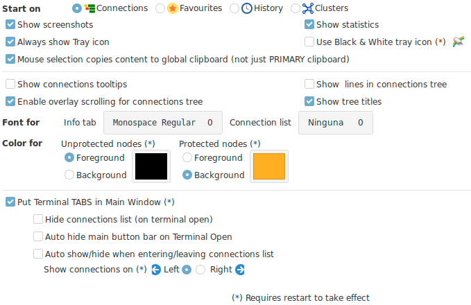
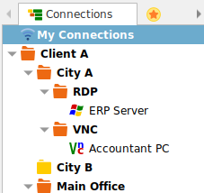
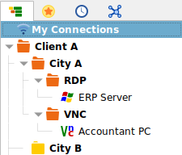
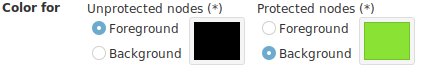
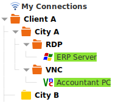
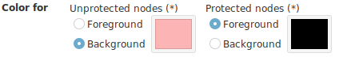
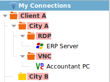

Options

- Start on : Select the tab you would like Ásbrú to start on when launching the application.
- Show screenshots : Present the thumbnails of existing screenshots.
- Show Statistics : If the statistics section should be presented in the main application interface.
- Always show Tray icon : Show tray icon even when the main application is open or just when has been hidden.
- Use Black & White icon : Useful for dark themes.
-
Mouse selection copies to global clipboard : When selecting text in a terminal, the text will be copied to the global clipboard so it will be available to other applications for paste.
-
Show connections tooltips : When you hover over your connections lists, will show a tooltip with the basic information for that connection.
- Show lines in connections tree : se images below
- Enable overlay scrolling for connections tree : will hide scroll bars when mouse is inside the connection tree only
- Show tree titles : When disabled, the tab titles for the different connection lists, will be hidden to compact the tabs interface (se images below).


- Font for
- Info TAB : Select the font and size you want to use in the Info Tab
- Connection List : Select the font and size to use in the Connection List
- Color for
- Unprotected nodes : Select foreground or background color
- Protected nodes : Select foreground or background color
The correct selection of this colors, will allow you to configure the interface to handle dark or light themes, and decide what is it that you want to stand out: Protected nodes or Unprotected nodes.
Examples
Protected nodes stand out by being green (Safe)


Unproteceted nodes stand out by being red (Danger)


- Put terminals in TABS in Main Window
- This settings are ignored in compact mode
- Hide connection list on terminal open
- Auto hide button bar on terminal open
- Auto Hide/Show when entering connection list
- Show connections list on : Left or Right
Show connection list buttons
When the auto hide options are set, you will be able to see the hidden list and buttons by selecting the "Info" tab.